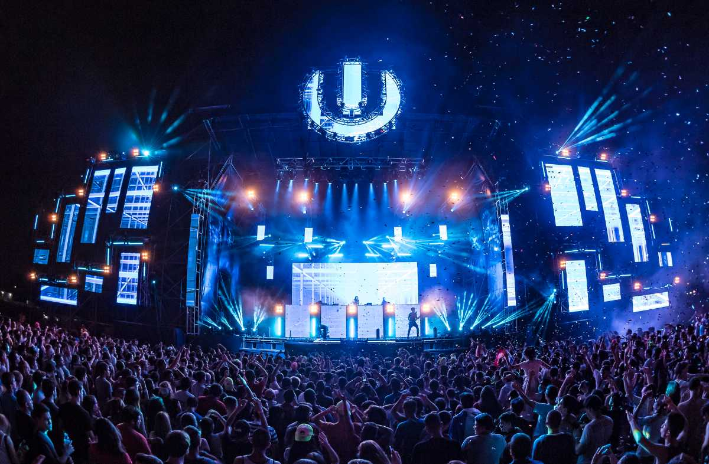

1. Road to Ultra, Mumbai, Delhi
Fans were shaking in excitement as THE Ultra Music Festival has finally made its way into Indian soil with its global leg of the tour, Road to Ultra. Being one of the largest electronic festivals in the world, they didn’t disappoint with the first ever event that was held in 2017 in Mumbai and Delhi, by including global electronic duo, the Chainsmokers in the lineup. This one-day festival is packed with performances from some of the biggest names in the Indian and global EDM industry.